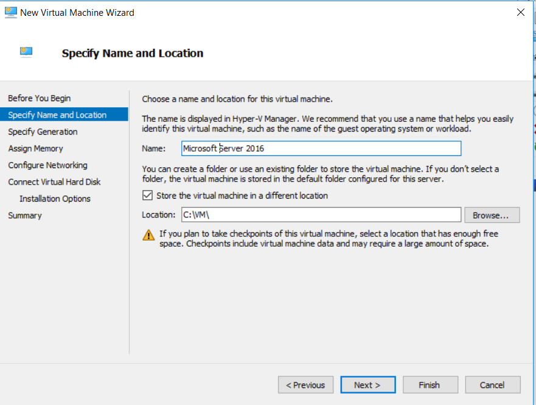
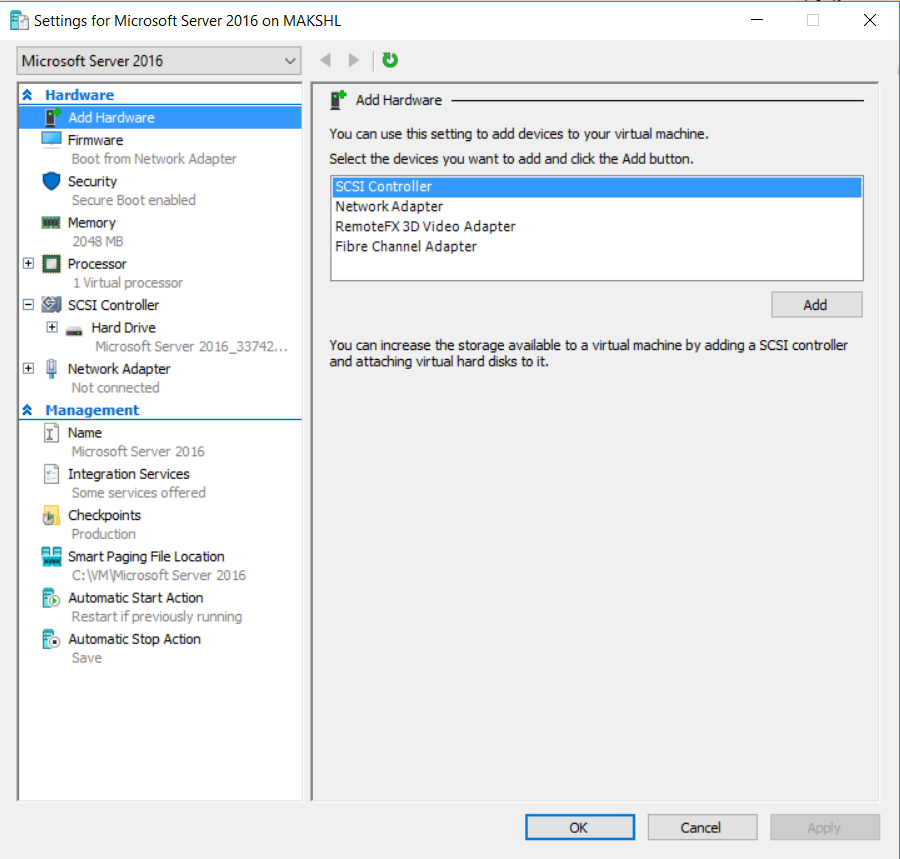
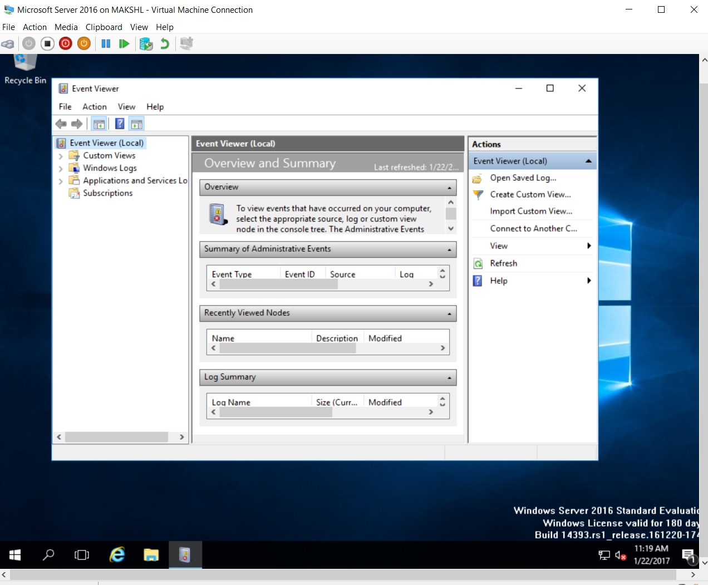

Название лекции
Разработка динамичесих веб приложений
Гладкий Максим Валерьевич / github:MaksHladki
Содержание лекции
Распространенные платформы виртуализации
- VMWARE (ESX, Server)
- CITRIX (Xen)
- Sun xVM (Virtual box)
- Microsoft (Hyper-V)
- Parallels (Parallels)
- Virtualiron (Virtualiron)
Гипервизор
Гипервизор – это платформа виртуализации, позволяющая запускать на одном физическом компьютере несколько операционных систем. Именно гипервизор предоставляет изолированное окружение для каждой виртуальной машины, и именно он предоставляет гостевым ОС доступ к аппаратному обеспечению компьютера
https://habrahabr.ru/post/98580/
Hyper-V
История
- 2003 - Microsoft acquires Connectix
- 2004 - Miscrosoft Visrtual Server 2005
- 2005 - Microsoft Virtual Server 2005 R2
- 2008 - Microsoft Hyper-V Server 2008
- 2009 - Microsoft Hyper-V server 2008 R2
- 2011 - Microsoft Hyper-V server 2008 R2 SP1
- 2012 - Microsoft Hyper-V server 2012
- 2013 - Microsoft Hyper-V server 2012 R2
- 2016 - Microsoft Hyper-V server 2016
Типы виртуальных машин
- BIOS based architecture - Generation 1
- EFI based architecture - Generation 2
Два способа развертывания
- Как отдельная роль внутри ОС Windows
- Как самостоятельная ОС Windows Hyper-V Server
Архитектура Hyper-V
Общий вид

Понятие раздела
Hyper-V поддерживает разграничение согласно понятию раздел. Раздел — логическая единица разграничения, поддерживаемая гипервизором, в котором работают операционные системы
- Hyper-V поддерживает разграничение согласно понятию раздел
- Каждый экземпляр гипервизора должен иметь один родительский раздел
Алгоритм работы виртуализации
- стек виртуализации запускается на родительском разделе и обладает прямым доступом к аппаратным устройствам
- родительский раздел порождает дочерние разделы, на которых и располагаются гостевые ОС, при помощи API гипервизова
- дочерний раздел также может породить собственные дочерние разделы
Родительский раздел

- Родительский раздел создается системой в первую очередь, как только гипервизор начинает работу
- Родительский раздел используется для создания и управления дочерними разделами системы и включает WMI провайдера, предоставляющего интерфейс для удаленного администрирования.
- Родительский раздел управляет и распределяет аппаратные ресурсы, за исключением процесса физического распределения памяти, который осуществляется гипервизором
- Аппаратные ресурсы родительского раздела являются общими и выделяются для использования дочерними разделами
- Родительский раздел управляет питанием, "plug and play" - операциями и ведет журналы аппаратных сбоев.
Стек виртуализации
Ряд компонент, располагающийся в родительском разделе, называется стеком виртуализации. Стек виртуализации имеет прямой доступ к аппаратному обеспечению хостового компьютера. Стек виртуализации состоит из следующих компонент:
- Служба управления виртуальными машинами (VMMS)
- Рабочие процессы виртуальных машин (VMWP)
- Виртуальные устройства
- Драйвер виртуальной инфраструктуры (VID)
- Библиотека интерфейсов гипервизора
Дочерний раздел (child partition)
Как уже отмечалось, в рамках дочерних разделов функционируют гостевые операционные системы. Гипервизор первого типа поддерживает три основные типа дочерних разделов:
- с операционной системой семейства Windows и установленными компонентами интеграции;
- с операционной системой, отличной от семейства Windows и с установленными компонентами интеграции;
- с операционной системой, не поддерживающей компоненты интеграции.
Состояния ВМ для службы VMMS
- Starting
- Active
- Not Active
- Taking Snapshot
- Applying Snapshot
- Deleting Snapshot
- Merging Disk
Рабочий процесс виртуальной машины (VMWP)
Для управления виртуальной машиной из родительской партиции запускается особый процесс – рабочий процесс виртуальной машины (VMWP). Процесс этот работает на уровне пользователя. Для каждой запущенной виртуальной машины служба VMMS запускает отдельный рабочий процесс. Это позволяет изолировать виртуальные машины друг от друга. Для повышения безопасности, рабочие процессы запускаются под встроенным пользовательским аккаунтом Network Service.
- Создание, конфигурация и запуск виртуальной машины
- Пауза и продолжение работы (Pause/Resume)
- Сохранение и восстановление состояния (Save/Restore State)
- Создание моментальных снимков (снапшотов)
- Кроме того, именно рабочий процесс эмулирует виртуальную материнскую плату (VMB), которая используется для предоставления памяти гостевой ОС, управления прерываниями и виртуальными устройствами.
Виртуальные устройства
Виртуальные устройства (VDevs) – это программные модули, реализующие конфигурацию и управление устройствами для виртуальных машин. VMB включает в себя базовый набор виртуальных устройств, включающий в себя шину PCI и системные устройства, идентичные чипсету Intel 440BX. Есть два типа виртуальных устройств:
- Эмулируемые устройства – эмулируют определенные аппаратные устройства, такие, к примеру, как видеоадаптер VESA. Эмулируемых устройств достаточно много, к примеру: BIOS, DMA, APIC, шины ISA и PCI, контроллеры прерываний, таймеры, управление питанием, контроллеры последовательных портов, системный динамик, контроллер PS/2 клавиатуры и мыши, эмулируемый (Legacy) Ethernet-адаптер (DEC/Intel 21140), FDD, IDE-контроллер и видеоадаптер VESA/VGA. Именно поэтому для загрузки гостевой ОС может использоваться только виртуальный IDE-контроллер, а не SCSI, который является синтетическим устройством.
- Синтетические устройства – не эмулируют реально существующие в природе железки. Примерами служат синтетический видеоадаптер, устройства взаимодействия с человеком (HID), сетевой адаптер, SCSI-контроллер, синтетический контроллер прерывания и контроллер памяти. Синтетические устройства могут использоваться только при условии установки компонент интеграции в гостевой ОС. Синтетические устройства обращаются к аппаратным устройствам сервера посредством провайдеров служб виртуализации, работающих в родительской партиции. Обращение идет через виртуальную шину VMBus, что намного быстрее, чем эмуляция физических устройств.
Драйвер виртуальной инфраструктуры (VID)
Драйвер виртуальной инфраструктуры (vid.sys) работает на уровне ядра и осуществляет управление партициями, виртуальными процессорами и памятью. Так же этот драйвер является промежуточным звеном между гипервизором и компонентами стека виртуализации уровня пользователя.
Библиотека интерфейса гипервизора
Библиотека интерфейса гипервизора (WinHv.sys) – это DLL уровня ядра, которая загружается как в хостовой, так и в гостевых ОС, при условии установки компонент интеграции. Эта библиотека предоставляет интерфейс гипервызовов, использующийся для взаимодействия ОС и гипервизора.
Провайдеры служб виртуализации (VSP)
Провайдеры служб виртуализации работают в родительской партиции и предоставляют гостевым ОС доступ к аппаратным устройствам через клиент служб виртуализации (VSC). Связь между VSP и VSC осуществляется через виртуальную шину VMBus.
Шина виртуальных машин (VMBus)
Назначение VMBus состоит в предоставлении высокоскоростного доступа между родительской и дочерними партициями, в то время как остальные способы доступа значительно медленнее из-за высоких накладных расходах при эмуляции устройств. Если гостевая ОС не поддерживает работу интеграционных компонент – приходится использовать эмуляцию устройств. Это означает, что гипервизору приходится перехватывать вызовы гостевых ОС и перенаправлять их к эмулируемым устройствам, которые, напоминаю, эмулируются рабочим процессом виртуальной машины. Поскольку рабочий процесс запускается в пространстве пользователя, использование эмулируемых устройств приводит к значительному снижению производительности по сравнению с использованием VMBus. Именно поэтому рекомендуется устанавливать компоненты интеграции сразу же после установки гостевой ОС. Как уже было сказано, при использовании VMBus взаимодействие между хостовой и гостевой ОС происходит по клиент-серверной модели. В родительской партиции запущены провайдеры служб виртуализации (VSP), которые являются серверной частью, а в дочерних партициях – клиентская часть – VSC. VSC перенаправляет запросы гостевой ОС через VMBus к VSP в родительской партиции, а сам VSP переадресовывает запрос драйверу устройства. Этот процесс взаимодействия абсолютно прозрачен для гостевой ОС.
Архитектурные особенности
- Виртуализированные разделы не имеют ни доступа к физическому процессору, не могут управлять прерываниями
- Вместо этого у них есть виртуальное представление процессора и гостевой виртуальный адрес, зависящий от конфигурации гипервизора
- Дочерние разделы не имеют непосредственного доступа к аппаратным ресурсам, но зато получают виртуальное представление ресурсов, называемое виртуальными устройствами.
- Любая попытка обращения к виртуальным устройствам перенаправляется через VMBus к устройствам родительского раздела, которые и обработают данный запрос. VMBus — это логический канал, осуществляющий взаимодействие между разделами. Ответ возвращается также через VMBus.
- Родительские разделы запускают провайдер сервиса виртуализации (Virtualization Service Provider или сокр. VSP), который соединяется с VMBus и обрабатывает запросы доступа к устройствам от дочерних разделов. Виртуальные устройства дочернего раздела работают с клиентом сервиса виртуализации (Virtualization Service Client или сокр. VSC), который перенаправляет запрос через VMBus к VSP родительского раздела. Этот процесс прозрачен для гостевой ОС.
- Гипервизор может определять подмножество процессоров для каждого раздела
- ипервизор управляет прерываниями процессора и перенаправляет их в соответствующий раздел, используя логический контроллер искусственных прерываний
- Hyper-V может аппаратно ускорять трансляцию адресов между различными гостевыми виртуальными адресными пространствами при помощи IOMMU (I/O Memory Management Unit — Устройство управления вводом-выводом памяти), которое работает независимо от аппаратного управления памятью, используемого процессором
- Виртуальные устройства также поддерживают технологию Windows Server Virtualization, называемую прогрессивный ввод-вывод (англ. Enlightened I/O), для накопителей, сетевых и графических подсистем в том числе.
Характеристики
- Масштабируемость, производительность и плотность
Ключевые особенности хранилища
- Поддержка Virtual Fiber Channel (доступ к Fiber Channel SAN из ВМ)
- Нативная поддержка 4-КВ (преимущество от более емких и надежных дисков)
- Размер Virtual Hard Disk до 64 ТВ
- Offloaded Data Transfer (ODX) - повышает быстродействие используя SAN
Улучшенное управление ресурсами
- Улучшение Dynamic Memory (более высокий уровень консолидации ВМ)
- Resource Metering (лог истории использования ВМ)
- QUality of Service (QoS) (позволяет обеспечить SLA по производительности ВМ)
- Data Center Bridging (DCB) - объеденяет сетевой трафик для повышения QoS
Повышение уровня безопасности и изоляции
- Private Virtual LAN
- Защита от ARP Spoofing
- DHCP Guard Protection
- Virtual Port ACLs
- Trunk Mode to Virtual Machine
- Monitoring and Port Mirroroing
- Windows PowerShell / WMI Managment
- IPSec
- SR-IOV
- Dynamic Virtual Machine Queue
- Extensible Switch - открытая платформа для созданий расширений с использованием Windows API
Физическая безопасность
Bitloker encryption
- Шифрование локальных жестких дисков
- Шифрование кластерных дисков
- Шифрование Cluster Shared Volumes
- Изменение Volume level encryption
Уровни миграции ВМ
- Live Migration - бысрая миграция ВМ без ограничений
- Live Storage Migration - миграция дисков
- Shared-Nothing Live Migration - перенос ВМ между узлами и кластерами
Пример создания ВМ
Установка Hyper-V
Hyper-V Manager

Hyper-V Manager
Создание новой ВМ
Название и путь
Выбор типа

Размер ОП

Настройка сети
Virtual Hard Disk

Дополнительные опции
Создание сетевого подключения

Настройка параметров подключения

Настройки ВМ: hardware
Настройки ВМ: firmware
Настройки ВМ: security
Настройки ВМ: memory
Настройки ВМ: processor

Настройки ВМ: SCSI
Настройки ВМ: network

Запуск ВМ

Установка ОС

Результат установки
Спасибо за внимание